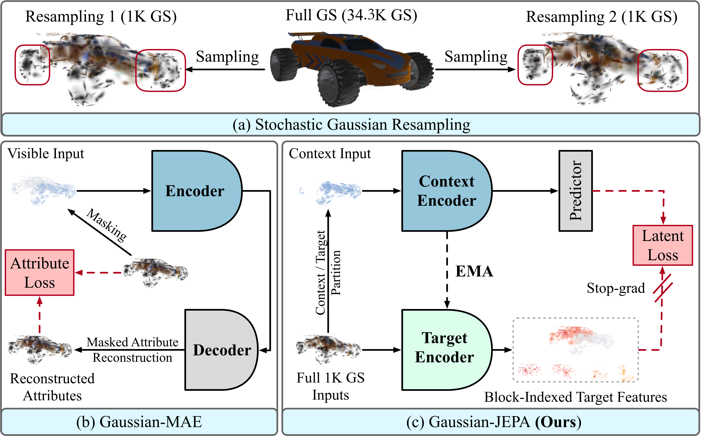
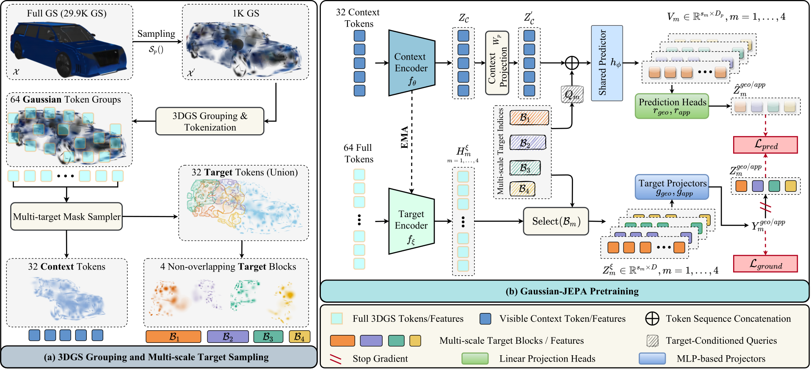
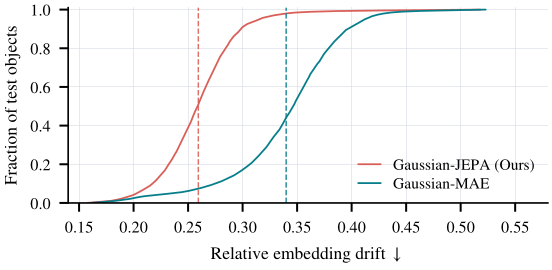
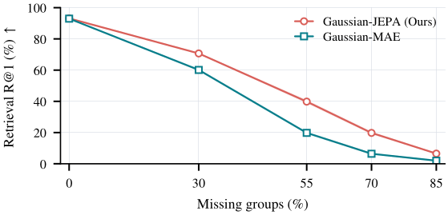
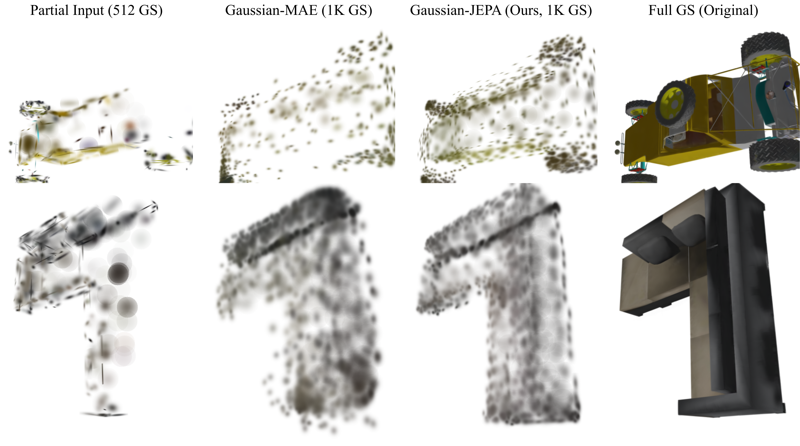
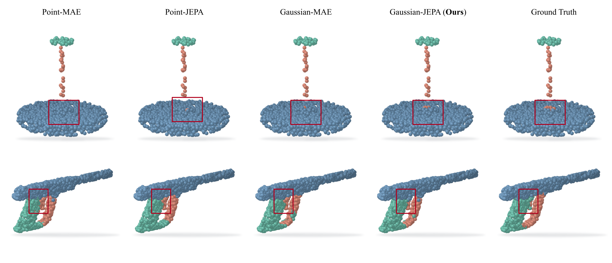

Reconstruction
Recover Gaussian attributes
Coordinates, opacity, scale, rotation, and appearance are decoded in input space.
Object-level 3D Gaussian representation learning
Joint-Embedding Predictive Learning for 3D Gaussian Splats
TL;DR: Gaussian-JEPA learns reusable features directly from 3D Gaussian assets. It predicts latent representations of held-out Gaussian token blocks from visible context, without reconstructing raw Gaussian attributes.
Motivation
Dense Gaussian assets exceed a practical encoder budget. Independent fixed-budget sampling therefore changes the primitive realization, although the underlying object is unchanged.

Reconstruction
Coordinates, opacity, scale, rotation, and appearance are decoded in input space.
Gaussian-JEPA
Visible context predicts stop-gradient features of spatial target blocks at multiple scales.
Method
A 1K-Gaussian observation is grouped into 64 local tokens. Four non-overlapping targets cover 32 tokens with heterogeneous spatial support; the exact complement forms the shared context.

All geometry and appearance attributes are encoded; xyz defines local neighborhoods.
Blocks of 11, 9, 7, and 5 groups provide local-to-coarse predictive supervision.
Prediction and grounding operate on learned targets rather than raw Gaussian attributes.
Gaussian-specific evidence
Frozen representations are tested under independent resampling and spatially partial observations. A shared completion decoder then measures whether partial features support complete Gaussian prediction.
Lower drift across independent 1K samples while retaining instance retrieval.

Stronger partial-to-complete retrieval as spatial evidence is removed.

Renderable completion
Given the same partial 512-Gaussian input, identical decoders predict complete 1K-Gaussian representations. Gaussian-JEPA improves Chamfer distance, F-score, and render-space metrics.

Semantic transfer
Gaussian methods use a matched 1K-Gaussian pretraining and transfer budget. Frozen probing isolates the quality of the pretrained encoder.
| Evaluation | Gaussian-MAE | Gaussian-JEPA |
|---|---|---|
| MN10 · Full | 94.16 | 94.94 |
| MN40 · Full | 92.54 | 92.63 |
| MN10 · Linear | 93.50 | 93.72 |
| MN40 · Linear | 88.97 | 90.47 |

Author affiliations
Citation
Please cite the arXiv paper as follows.
@article{ren2026gaussian,
title = {Gaussian-JEPA: Joint-Embedding Predictive Learning
for 3D Gaussian Splats},
author = {Ren, Bin and Ma, Qi and Li, Yue and Han, Zongyan
and Li, Yidi and Fu, Yuqian and Anwer, Rao Muhammad
and Gevers, Theo and Khan, Fahad Shahbaz
and Khan, Salman},
journal = {arXiv preprint arXiv:2608.15651},
year = {2026}
}